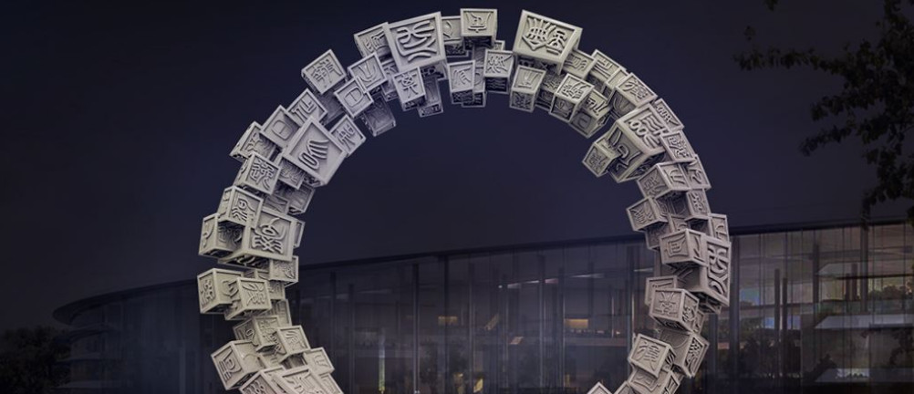
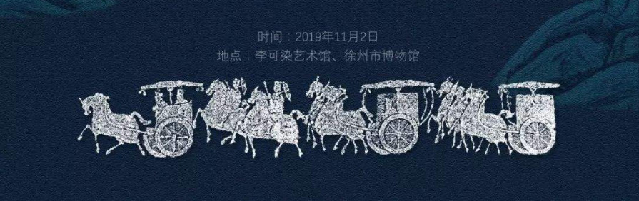

汉文，完全以汉字书写。汉字经过3000年的演变，至今发展成通用简化汉字。汉族的语言通称汉语，属汉藏语系汉语族，是世界上历史最悠久最丰富的语言之一。

汉语属汉藏语系，按学术界较常见的划分方法，汉语可分官话、粤语、吴语、闽语、湘语、赣语、客家话七大方言（有许多不同的划分方法，参见汉语方言）。

现代标准汉语普通话有4个声调：55（阴平声）、35（阳平声）、214（上声）、51（去声）。部分汉语方言如江淮官话、吴语、湘语、赣语、客家话、闽语、粤语等方言区声调可达5~9个，保留入声，部分地区上声，去声分阴阳。研究汉语语音系统的科学，是“汉语音韵学”，建立于公元5世纪，迄今已有1000多年的历史。